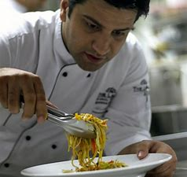

Kunal Kapur (born 18 September 1979) is an Indian
celebrity chef and restaurateur
known for hosting and judging MasterChef India.Kapur was born in New Delhi
to a Punjabi family. He did his schooling from St. Francis De Sales School
and pursued higher education in Hotel Management from Dr. Ambedkar Institute of
Hotel Management Catering & Nutrition, Chandigarh.From a very early age, Kapur took
a liking to cooking and pursued it to become one of the most well-known chefs in India.
He trains underprivileged & unemployed youth in cooking and helps raise funds to make their
own sustained food business together with United Ways Delhi. He is also
about automobiles, technology, travel, fashion and history.Kapur has an
in-depth understanding of regional Indian cuisine, having learnt it from the
best in the industry. He is equally adept with innovative Indian cuisine that
is at par with the best culinary standards in the world.
Awards and achievements:
Kapur's name was cited by the Limca Book of Records for creating India’s largest Chocolate Tower.
He has received the Dr. S Radhakrishnan National Media Network Award in 2014 for his contribution in Television.
He is the recipient of The Indian Television Academy Award for the Best Jury/Anchor for Junior MasterChef India.
He was awarded the Sir Edmund Hillary Fellowship, by the Prime Minister of New Zealand, John Key in the field of
Food & Beverage.
He won the Epicurean Guild Award for Best Food Entertainer in 2017 for Thalis of India.
The Most Enterprising Brands & Leaders of Asia Award by WBR India.
Associations:
Kapur is the brand ambassador for United Ways Delhi, a non profit organization that focuses on improving lives by education, income and health. His role as an ambassador is to train under-privileged youth in food production and educate them with the right kitchen skills and techniques to help them in becoming small-scale entrepreneurs/food hawkers.
Kapur is in the league of Elite Star Chefs in German Airlines Lufthansa, where he has customized menus for first and business class passengers.
He works closely with National Association of Streer Vendors in India to improve the lives and quality of food and sanitation of food hawkers in India.
He also promotes healthy cooking and is closely associated with Avanza Avocados for the same.
Kapur is associated with Tupperware and has recently launched two of their new products in Delhi.